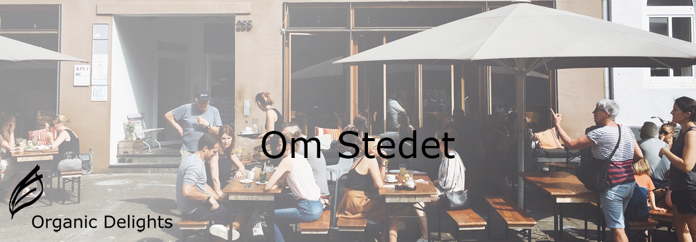
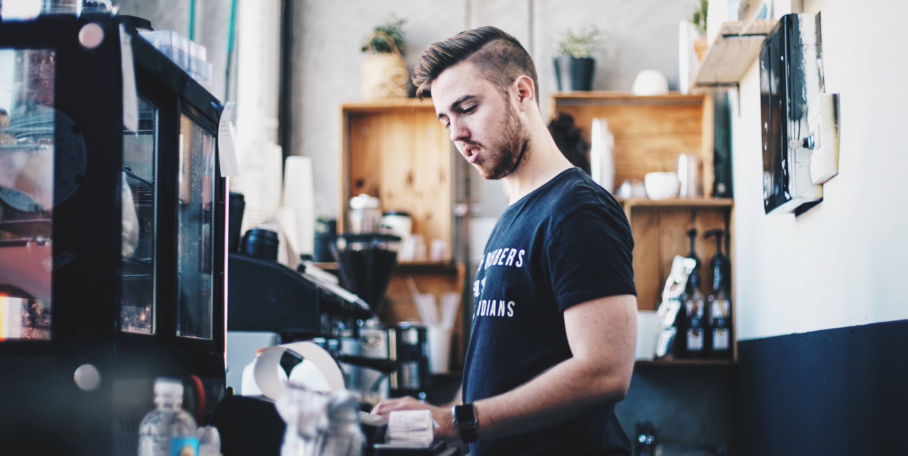

Vi sætter stor fokus på en arbejdsplads,
hvor vores ansatte og kunder kan føle sig hjemme og godt tilpas. Med et at hav af smagsvarianter,
udbyder vi smoothies i alle størrelser og former til både børn og voksne. Selve caféen ligger i centrum af København, men med fokus på en rolig atmosfære,
med både gratis WIFI og work-zone.